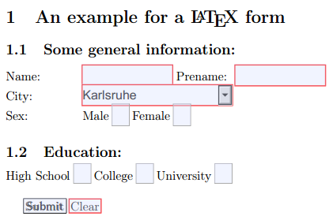

I've just stumbled across a full, working example how to create a html form within an LaTeX document. You can fill this form within your PDF-Reader. Here is the example PDF-file.
It looks like this in Chromes PDF reader:
{kind=link}

\documentclass[a4paper,12pt]{article}
\usepackage{amssymb} % needed for math
\usepackage{amsmath} % needed for math
\usepackage[utf8]{inputenc} % this is needed for german umlauts
\usepackage[ngerman]{babel} % this is needed for german umlauts
\usepackage[T1]{fontenc} % this is needed for correct output of umlauts in pdf
\usepackage[margin=2.5cm]{geometry} %layout
\usepackage{hyperref} % this is needed for forms and links within the text
\hypersetup{
pdfauthor = {Martin Thoma},
pdfkeywords = {Martin Thoma, exmple, LaTeX, form},
pdftitle = {An example for a LaTeX form}
}
\begin{document}
\title{An example for a LaTeX form}
\author{Martin Thoma}
\date{\today}
\section{An example for a \LaTeX~form}
\begin{Form}[action=mailto:info@example.com,encoding=html,method=post]
\subsection{Some general information:}
\begin{tabbing}
xxxxxxxxxx: \= \kill % This is needed for the right tab width
Name: \> \TextField[name=name,width=3cm,charsize=12pt]
{\mbox{}}
Prename: \TextField[name=vor,width=3cm,charsize=12pt]
{\mbox{}} \\
City: \>
\ChoiceMenu[combo,name=city,width=5cm,charsize=12pt,default=Karlsruhe]{\mbox{}}
{Chemnitz,Dresden,Leipzig,Berlin,Hamburg,Karlsruhe,München} \\
Sex: \>
\ChoiceMenu[radio,default=f,name=sex,charsize=14pt]{\mbox{}}{Male=m,Female=f}
\end{tabbing}
\subsection{Education:}
\CheckBox[name=highschool,charsize=12pt]{High School}
\CheckBox[name=college,charsize=12pt]{College}
\CheckBox[name=university,charsize=12pt]{University} \\
\Submit{Submit}
\Reset{Clear}
\hfill ~\\
\end{Form}
\end{document}
You can save this as pdf-form.tex and run this command in Linux:
pdflatex pdf-form.tex -output-format=pdf
It seems as if the \ChoiceMenu radio option is buggy at the moment. Does anybody know how to fix that? edit: Hmm ... it works in Chromes PDF reader, but not in Document Viewer. Mayby Document Viewer is buggy.
Sources
- TeX Users Group: PDF and HTML forms
- Teil 2: LATEX und PDF - TU Chemnitz (German)
- Dokumentation der HU Berlin (German)